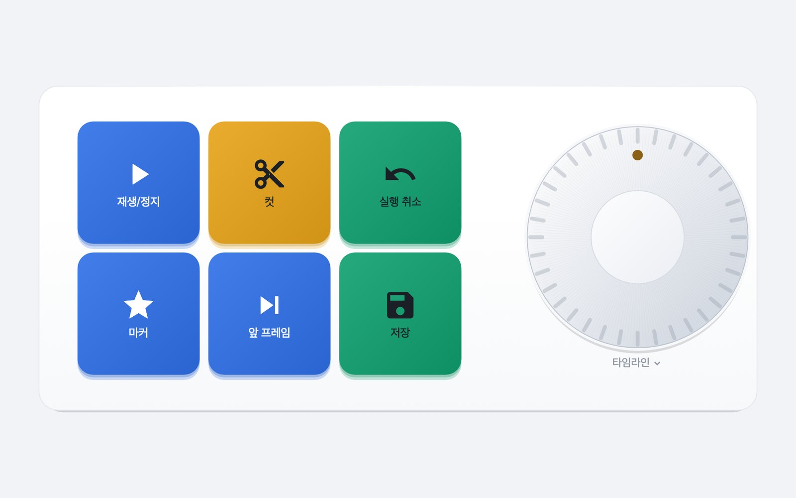
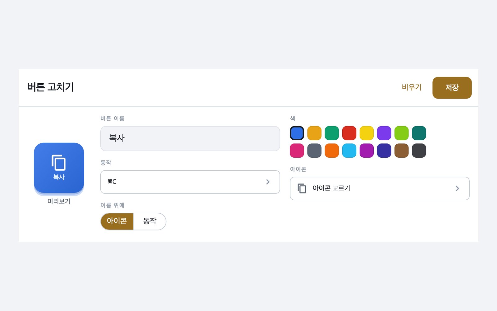
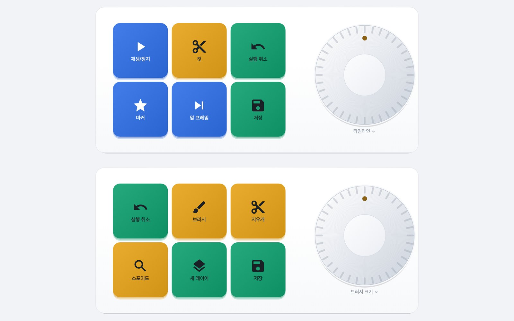

앞에 나온 앱을 따라갑니다
화면을 파이널컷, 포토샵, Safari, VS Code에 연결해 두세요. 그 앱이 앞으로 나오면 휴대폰이 그 화면으로 바뀌고, 벗어나면 정해 둔 화면으로 가거나 그대로 머뭅니다.
휴대폰의 버튼과 노브로 옆에 있는 Mac에서 단축키를 누르고, 글자를 입력하고, 앱을 열고, 스크립트를 실행합니다. Mac에서 파이널컷을 앞으로 가져오면 휴대폰이 파이널컷 버튼으로 바뀝니다.

아이디어
하드웨어 매크로패드는 손으로 바꾸기 전까지 같은 키를 들고 있습니다. VelozPad는 Mac에서 앞에 나온 앱을 보고 휴대폰의 버튼을 그 앱에 맞게 바꿉니다. 파이널컷에서는 타임라인, 포토샵에서는 브러시. 매크로패드는 이미 들고 다니는 휴대폰입니다.
들어 있는 것
화면을 파이널컷, 포토샵, Safari, VS Code에 연결해 두세요. 그 앱이 앞으로 나오면 휴대폰이 그 화면으로 바뀌고, 벗어나면 정해 둔 화면으로 가거나 그대로 머뭅니다.
타임라인, 브러시 크기, 볼륨을 돌립니다. 빠르게 돌리면 크게 움직이고, 손을 떼면 몇 초씩 혼자 구르지 않고 바로 멈춥니다.
휴대폰에서 녹화를 누르고 Mac에서 키를 누르세요. 키 코드도, ⌘ 기호 찾기도 필요 없습니다.
글자 한 줄 입력, 앱 열기, 재생·정지, 그리고 여러 단계 묶기. 앱을 열고, 기다렸다가, 단축키를 누릅니다.
Mac에 스크립트를 등록하면 휴대폰에서 이름으로 실행할 수 있습니다. 휴대폰은 명령을 보내지 않습니다. 어느 버튼을 눌렀는지만 보냅니다.
페어링은 Mac 화면의 QR 코드 하나로 끝납니다. 그 뒤로 연결은 암호화되고 이용자의 Mac에만 고정되며, 페어링하지 않은 기기는 들어오지 못합니다.

어디서 왔나
질문 하나에서 시작했습니다. 아이폰의 버튼이 Mac에서 ⌘C를 누를 수 있을까? 첫 빌드가 로컬 네트워크로 바로 그 일을 해낸 것이 2026년 9월입니다.
그다음은 전부 위험하지 않게 만드는 일이었습니다. Mac을 움직이는 휴대폰은 컴퓨터의 리모컨이기 때문에, 페어링과 암호화, 그리고 스크립트는 Mac에만 둔다는 원칙이 위의 어떤 기능보다 먼저 들어갔습니다.
그리고 이 앱을 가질 이유가 되는 부분, 앞에 나온 앱을 따라가는 화면이 붙었습니다. 지금은 같은 Mac을 아이폰과 Android 태블릿으로 모두 움직여 봤습니다.
개인정보
휴대폰과 Mac은 이용자의 네트워크 안에서 암호화된 채로 서로 직접 대화합니다. 사이에 개발자의 서버도, 계정도 없습니다. 버튼 구성과 페어링 정보는 이용자의 기기에만 있습니다. 앱은 무료이며 광고가 붙어 있어 Google AdMob이 일반적인 광고 식별자와 기기 정보를 수집하지만, 이용자가 누르는 버튼은 광고로 가지 않습니다. 자세한 내용은 개인정보처리방침에 모두 적어 두었습니다.
앱은 App Store와 Google Play에 곧 나옵니다. 함께 필요한 Mac 에이전트는 이 페이지에서 무료로 받으실 수 있게 됩니다.
